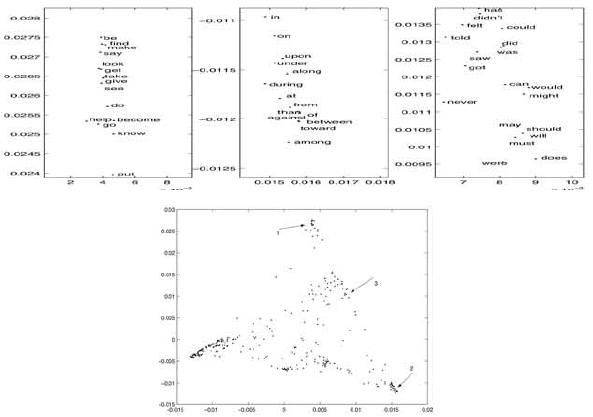
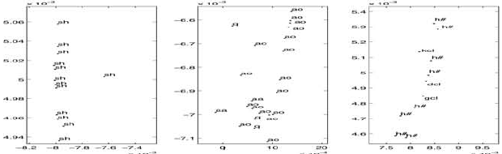

Paper: Belkin, Mikhail and Niyogi, Partha. “Laplacian Eigenmaps and
Spectral Techniques for Embedding and Clustering.” Advances in Neural
Information Processing Systems, 2001. Reviewer: Reviewer-P02 Auditor:
Auditor-P02 Status: revised after audit Date: 2026-05-15 Source manifest
ID: P02 Canonical reading copy:
sources/pdf/P02_belkin_niyogi_laplacian_eigenmaps.pdf; 7
PDF pages; SHA-256 in source_manifest.yml is
aba984615a8fdb028aaea6f7b1716d4252838b42538457d03678a5ce8c1132a0.
A mathematically capable reader should be comfortable with the following before reading the paper:
W, degree matrices D, connected components,
and nearest-neighbor graphs.The paper starts from a common manifold-learning assumption: high-dimensional observations may be samples from a lower-dimensional geometric object. Instead of trying to estimate that object explicitly, Belkin and Niyogi build a graph on the sample points, make nearby points strongly connected, and then use low-frequency eigenvectors of the graph Laplacian as coordinates. “Low-frequency” here means smooth on the graph: if two vertices are connected by a large weight, their embedding coordinates are penalized for being far apart.
The key conceptual bridge is that the graph Laplacian is treated as a discrete analogue of the Laplace-Beltrami operator on the underlying manifold. The heat kernel motivates Gaussian edge weights between nearby data points. A reader should not expect a modern convergence theorem or density-normalized operator in this paper. The paper is primarily an algorithmic and geometric proposal, supported by short derivations and qualitative examples.
The paper addresses nonlinear dimensionality reduction for data that are ambient high-dimensional but intrinsically low-dimensional. The introduction gives the example of gray-scale images of a fixed object under camera motion: the pixel vectors lie in \(\mathbb{R}^{n^2}\), but the intrinsic degrees of freedom are those of the camera (page 1, introduction). [explicit]
The authors position their method against general dimensionality reduction methods that do not explicitly use the manifold structure, and cite contemporary interest from Isomap and locally linear embedding (page 1, introduction; references [4] and [6]). [explicit]
The paper’s central claim is that a simple graph construction plus one sparse generalized eigenproblem gives a locality-preserving representation whose coordinates reflect intrinsic geometric structure (pages 1-3, introduction and Section 1). [explicit]
Input: data points \(x_{1}, \ldots, x_{k} in \mathbb{R}^{l}\) (page 2, Section 1). [explicit]
Step 1 constructs an undirected weighted graph with one node per data point and edges between close points (page 2, Section 1). The paper gives two graph options. [explicit]
i and
j when \(\Vert x_{i} - x_{j}\Vert
^2 < \epsilon\) in the Step 1 statement on page 2. The
advantage listed is geometric motivation and natural symmetry; the
disadvantages listed are possible disconnected components and difficulty
choosing \(\epsilon\) (page 2, Section
1, Step 1(a)). [explicit]n-nearest-neighbor graph: connect
i and j if either i is among the
n nearest neighbors of j or j is
among the n nearest neighbors of i. The
advantage listed is easier choice and a tendency toward connected
graphs; the disadvantage listed is weaker geometric intuition (page 2,
Section 1, Step 1(b)). [explicit]Step 2 chooses edge weights. The paper gives two options. [explicit]
i and j are
connected, set \(W_{ij} = \exp(-\Vert x_{i} -
x_{j}\Vert ^2 / t)\) in Section 1, Step 2(a), page 2.
[explicit]i and j are connected by
an edge, avoiding the choice of t (page 2, Section 1, Step
2(b)). [explicit]Step 3 solves the generalized eigenproblem
\[ \begin{aligned} L y &= \lambda D y \end{aligned} \]
where \(D_{ii} = sum_{j} W_{ji}\)
and \(L = D - W\); the embedding of
\(x_{i}\) into \(\mathbb{R}^{m}\) is \((y_{1}(i), \ldots, y_{m}(i))\), using the
first m nontrivial eigenvectors after the constant
zero-eigenvalue vector \(y_{0}\) (page
3, Section 1, equation (1)). [explicit]
If the graph is disconnected, the paper instructs the reader to apply Step 3 separately to each connected component (page 2, Section 1, Step 3). [explicit]
The graph smoothness objective for a one-dimensional map is
\[ \begin{gathered} sum_{i,j} (y_{i} - y_{j})^2 W_{ij} \end{gathered} \]
under constraints that prevent trivial collapse (page 3, Section 2). [explicit]
The quadratic identity is
\[ \begin{aligned} (1/2) sum_{i,j} (y_{i} - y_{j})^2 W_{ij} &= y^T L y \end{aligned} \]
with \(L = D - W\), equation (2), page 3. [explicit]
The normalization constraint \(y^T D y = 1\) removes arbitrary scaling, and the orthogonality constraint \(y^T D 1 = 0\) removes the constant zero-eigenvalue solution. The resulting one-dimensional nontrivial embedding is the eigenvector with the smallest nonzero generalized eigenvalue (page 4, Section 2). [explicit]
For an m-dimensional embedding, the authors write \(Y = [y_{1} y_{2} \ldots y_{m}]\),
minimize
\[ \begin{aligned} sum_{i,j} \Vert Y_{i} - Y_{j}\Vert ^2 W_{ij} &= \operatorname{tr}(Y^T L Y) \end{aligned} \]
and constrain \(Y^T D Y = I\) to prevent collapse onto a lower-dimensional subspace (pages 4-5, Section 2). [explicit]
The manifold analogue in Section 2.1 is to minimize average squared gradient energy,
\[ \operatorname*{arg\,min}_{\|f\|_{L^2(M)}=1} \int_M \|\nabla f(x)\|^2\,dx . \]
which leads to eigenfunctions of the Laplace-Beltrami operator \(\mathcal L\) (page 5, Section 2.1). [explicit]
The heat equation connection in Section 2.2 is
\[ \frac{\partial u}{\partial t} = \mathcal L u, \qquad u(x,t)=\int_M H_t(x,y)f(y)\,dy . \]
with \(H_{t}\) the heat kernel/Green’s function (pages 5-6, Section 2.2). [explicit]
The local heat-kernel approximation is written as
\[ H_t(x,y) \approx (4\pi t)^{-n/2} \exp\!\left(-\frac{\|x-y\|^2}{4t}\right) \]
for small t and nearby x,y, with \(n = \dim M\) (page 6, Section 2.2).
[explicit]
The Section 2.2 derivation concludes with an epsilon-truncated edge-weight formula
\[ W_{ij} = \begin{cases} \exp\!\left(-\dfrac{\|x_i-x_j\|^2}{4t}\right), & \|x_i-x_j\| < \epsilon,\\ 0, & \text{otherwise}. \end{cases} \]
on page 6, Section 2.2. [explicit]
Audit note: Section 1 uses \(\exp(-\Vert x_{i} - x_{j}\Vert ^2 / t)\), while Section 2.2 derives \(\exp(-\Vert x_{i} - x_{j}\Vert ^2 / 4t)\). This is probably a bandwidth convention/rescaling rather than a substantive disagreement, but the memo should preserve both forms because the paper prints both (page 2, Section 1; page 6, Section 2.2). [explicit/derived]
Figure 1 appears on page 3, immediately before the eigenproblem. It
compares Laplacian Eigenmaps to PCA on 1000 binary 40 x 40
images containing either a vertical or horizontal bar at random
locations. The left panel shows example horizontal and vertical bars;
the middle panel is the two-dimensional Laplacian Eigenmaps
representation; the right panel is PCA using the first two principal
directions. Dots are vertical bars and plus signs are horizontal bars.
The point of the figure is that the spectral graph embedding separates
or organizes the two bar families more cleanly than a global linear PCA
projection (page 3, Figure 1; page 6, Example 1). [explicit/derived]
Figure 2 appears on page 4. It shows the 300 most frequent words of the Brown corpus in the spectral domain. The experiment represents each word as a 600-dimensional vector using left and right neighbor frequencies from corpus bigram statistics (page 4, Figure 2; page 6, Example 2). The arrows mark regions magnified in Figure 3. The figure is qualitative evidence that graph-neighborhood geometry over context-count vectors can produce linguistically meaningful clusters in a two-dimensional eigenmap. [explicit/derived]

Figure 3 appears on page 4 above Figure 2 and shows the three arrow-marked fragments from Figure 2. The caption states that the first fragment contains infinitives of verbs, the second contains prepositions, and the third mostly modal and auxiliary verbs, concluding that syntactic structure is well preserved (page 4, Figure 3). [explicit]
Figure 4 appears on page 5. It plots 685 speech data points in a two-dimensional Laplacian spectral representation. The data are from a sentence sampled at 1 kHz, converted to short-time Fourier spectra every 5 ms, producing 685 vectors of 256 Fourier coefficients for 30 ms chunks; each vector is labeled by phonetic segment identity (page 5, Figure 4; page 7, Example 3). The figure has marked regions later magnified in Figure 5 and visually shows a spoke-like geometry. [explicit]


Figure 5 appears on page 7. It magnifies three selected regions from
Figure 4 and labels phonetic classes. The caption emphasizes phonetic
homogeneity of chosen regions and explains symbols such as
sh, aa, ao, kcl,
dcl, gcl, and h# (page 7, Figure
5). The accompanying text says the two spokes in Figure 4 correspond
predominantly to fricatives and closures, while the central portion
corresponds mostly to periodic sounds such as vowels, nasals, and
semivowels (page 7, Example 3). [explicit]
Experimental limitations: the experiments are illustrative and qualitative. The paper does not report train/test metrics, clustering accuracy, stability under parameter changes, comparison across graph constructions, or runtime measurements (Section 3, pages 6-7). [derived]
The core theoretical claim is a variational analogy: minimizing graph energy \(\sum (y_{i}-y_{j})^2 W_{ij}\) under suitable constraints gives Laplacian eigenvectors, while minimizing squared gradient energy on a manifold gives Laplace-Beltrami eigenfunctions (pages 3-5, Section 2 and Section 2.1). [explicit]
The paper claims that the graph Laplacian obtained from nearby data points may be viewed as an approximation to the Laplace-Beltrami operator on the underlying manifold (page 1, introduction; pages 5-6, Sections 2.1-2.2). [explicit]
The heat-kernel argument supplies a “principled” choice of weights by linking \(W_{ij}\) to the local short-time heat kernel (page 2, introduction; page 6, Section 2.2). [explicit]
The paper also states that locality preservation makes the algorithm relatively insensitive to outliers and noise, and that it implicitly emphasizes natural clusters (page 2, introduction). This is a motivation/claim rather than something quantitatively demonstrated in the paper. [explicit/contextual]
The graph-theoretic connection to clustering is mostly through the objective and through cited spectral clustering/normalized cuts work, not through a new clustering theorem (page 2, introduction; reference [5]). [contextual]
The paper gives no asymptotic convergence theorem for the empirical graph Laplacian to the Laplace-Beltrami operator. It gives a geometric derivation and analogy, with a local heat-kernel approximation (pages 5-6, Sections 2.1-2.2). [explicit/contextual]
Parameter choice remains unresolved. The paper itself says
epsilon-neighborhoods can lead to disconnected components and make \(\epsilon\) difficult to choose;
nearest-neighbor graphs are simpler but less geometrically intuitive;
heat weights require choosing t; binary weights avoid
t but discard distance magnitudes (page 2, Section 1).
[explicit]
The heat-kernel derivation is local and short-time. It assumes nearby
points in local coordinates and small t, and it does not
address finite-sample density bias, boundary effects, variable
bandwidths, anisotropy, or high-dimensional distance concentration (page
6, Section 2.2). [explicit/derived]
The paper’s graph construction is not adaptive-scale. It uses a
global epsilon, a global number of nearest neighbors, and a global heat
parameter t; it does not introduce local bandwidths or
self-tuning kernels (page 2, Section 1; page 6, Section 2.2).
[explicit]
The paper treats edge weights as affinities for embedding and clustering, not as physical conductances or length-normalized transport rates. Interpreting \(W_{ij}\) as a conductance is natural in graph-Laplacian language but is not the vocabulary used by the authors. [derived]
The experiments are visual demonstrations on toy images, word-context vectors, and speech spectra. They do not establish general performance, parameter robustness, or biological plausibility (pages 6-7, Section 3). [derived]
This is a foundational paper for spectral manifold learning. It makes the now-standard Laplacian Eigenmaps pipeline concise: build a neighborhood graph, assign heat or binary weights, solve \(L y = \lambda D y\), and use nontrivial low-frequency eigenvectors as coordinates (pages 2-3, Section 1). [explicit/contextual]
Methodologically, the paper connects three ideas that remain central: graph smoothness penalties, Laplace-Beltrami eigenfunctions, and heat-kernel affinities. It also links manifold embedding to spectral clustering by showing that a locality-preserving embedding naturally highlights clusters (page 2, introduction; pages 3-5, Section 2). [explicit/contextual]
For the conductance/kernel review, P02 is important because it establishes the heat-kernel weight as a graph affinity for low-frequency Laplacian coordinates, while also exposing early unresolved issues: global scale choice, connectivity, and lack of density correction. [derived]
\(\epsilon\) graph edge rule:
\[ i \sim j \quad \text{if}\quad \lVert x_i-x_j\rVert^2 < \epsilon . \]
Label: explicit. Source: page 2, Section 1, Step 1(a). Notes: the printed Step 1 condition uses squared norm \(< \epsilon\); the later heat derivation uses \(\Vert x_{i} - x_{j}\Vert < \epsilon\) in the final truncated formula on page 6. Treat this as a notational threshold convention to audit. [explicit/uncertain]
Symmetrized n-nearest-neighbor edge rule:
\[ i \sim j \quad \text{if}\quad i \in \operatorname{NN}_n(j) \ \text{or}\ j \in \operatorname{NN}_n(i). \]
Label: explicit. Source: page 2, Section 1, Step 1(b). Notes: the OR rule makes the graph undirected/symmetric after nearest-neighbor search. [explicit]
Heat-kernel affinity in the algorithm:
\[ \begin{aligned} W_{ij} &= \exp(-\Vert x_{i} - x_{j}\Vert ^2 / t) \end{aligned} \]
for connected nodes. Label: explicit. Source: page 2, Section 1, Step
2(a). Notes: global bandwidth t; no local scaling.
[explicit]
Binary affinity:
\[ \begin{aligned} W_{ij} &= 1 \end{aligned} \]
if vertices are connected by an edge. Label: explicit. Source: page 2, Section 1, Step 2(b). Notes: this is a parameter-free simplification after graph construction. [explicit]
Local manifold heat kernel:
\[ \begin{aligned} H_{t}(x,y) \approx (4 \pi t)^(-n/2) \exp(-\Vert x-y\Vert ^2 / 4t) \end{aligned} \]
Label: explicit. Source: page 6, Section 2.2. Notes: local
approximation for small t and nearby points in local
coordinates. [explicit]
Epsilon-truncated heat affinity from Section 2.2:
\[ \begin{aligned} W_{ij} &= \exp(-\Vert x_{i} - x_{j}\Vert ^2 / 4t) \text{if} \Vert x_{i} - x_{j}\Vert < \epsilon \\ 0 \text{otherwise} \end{aligned} \]
Label: explicit. Source: page 6, Section 2.2. Notes: the factor
4 differs from the Section 1 algorithmic formula and can be
absorbed into a bandwidth convention if t is redefined.
[explicit/derived]
Conductance interpretation:
\[ \begin{aligned} c_{ij} :&= W_{ij} \end{aligned} \]
Label: derived. Source: derived from graph Laplacian \(L = D - W\) and graph Dirichlet energy, pages 3-4, Section 2. Notes: the paper calls these weights, not conductances; using conductance language is a review-layer interpretation. [derived]
The graph is weighted, undirected, and has k nodes, one
per data point. Edges connect nearby points by either epsilon
neighborhoods or symmetrized nearest neighbors (page 2, Section 1).
[explicit]
The weight matrix W is symmetric under the stated
constructions. The degree matrix is diagonal with entries \(D_{ii} = sum_{j} W_{ji}\), equivalently row
or column sums because W is symmetric (page 3, Section 1,
after equation (1)). [explicit]
The graph Laplacian is \(L = D - W\), symmetric positive semidefinite, and can be viewed as an operator on functions over graph vertices (page 3, Section 1, after equation (1)). [explicit]
The generalized eigenproblem is \(L y = \lambda D y\), equation (1), page 3. The constant vector is the zero-eigenvalue eigenvector, and for a connected graph it is the only one (page 4, Section 2). [explicit]
There is no Markov normalization or row-stochastic diffusion operator
in this paper. The normalization appears through the generalized
eigenproblem and the D-weighted orthogonality/scale
constraints (pages 3-4, Sections 1-2). [derived]
Primary task: nonlinear dimensionality reduction or embedding of high-dimensional data sampled from a low-dimensional manifold (pages 1-3, introduction and Section 1). [explicit]
Secondary task: clustering or cluster-revealing representation through locality-preserving spectral coordinates (page 2, introduction; Figures 1-5, pages 3-7). [explicit/contextual]
Demonstration domains: toy binary image bars, word-context vectors from the Brown corpus, and speech short-time Fourier spectra (pages 6-7, Section 3; Figures 1-5). [explicit]
The authors want a geometrically motivated algorithm for data sampled from a low-dimensional manifold embedded in high-dimensional space (page 1, abstract). [explicit]
They motivate graph Laplacians because the graph Laplacian approximates the Laplace-Beltrami operator, and the embedding maps approximate natural maps defined on the whole manifold (page 1, introduction). [explicit]
They motivate the heat-kernel weights by the connection between the Laplacian and the heat kernel, which they say enables principled weight choice (page 2, introduction; page 6, Section 2.2). [explicit]
They motivate locality preservation because nearby points should remain nearby in the embedding, and because local methods may be relatively insensitive to outliers and noise (page 2, introduction; pages 3-4, Section 2). [explicit]
They motivate clustering by saying natural clusters are implicitly emphasized and by connecting to spectral clustering/normalized cuts (page 2, introduction). [explicit]
The D-weighted constraint implies that high-degree
vertices contribute more to the normalization measure, making the
embedding respect the graph’s empirical sampling/affinity mass rather
than treating all vertices uniformly in the constraint (pages 3-4,
Sections 1-2). [derived]
The global heat scale t functions as a
locality/smoothing knob: smaller t concentrates weight near
very close neighbors; larger t makes weights decay more
slowly on the constructed graph (page 2, Step 2(a); page 6, Section
2.2). [derived]
The binary-weight option implies that the authors view graph topology alone as sometimes sufficient, even when distance magnitudes inside the neighborhood graph are discarded (page 2, Step 2(b)). [derived]
The energy identity \((1/2) \sum (y_{i}-y_{j})^2 W_{ij} = y^T L y\) makes each eigenvector a smooth graph signal subject to orthogonality and scale constraints. Strong weights force small coordinate differences, so low eigenvectors vary slowly along high-affinity edges (page 3, equation (2); page 4, Section 2). [explicit/derived]
The heat kernel motivation says the discrete weights approximate local heat flow on the manifold, so the low graph eigenvectors are intended to approximate low Laplace-Beltrami eigenfunctions (pages 5-6, Sections 2.1-2.2). [explicit/derived]
The embedding uses \(y_{1}, \ldots, y_{m}\), not \(y_{0}\), because \(y_{0}\) is constant with eigenvalue zero and collapses all vertices to the same coordinate (pages 3-4, Sections 1-2). [explicit]
For clustering, the relevant smoothing effect is that graph cuts or clusters should appear as low-energy variations when within-cluster weights are high and between-cluster weights are weak. The paper suggests this connection but does not formalize it beyond links to spectral clustering and examples (page 2, introduction; pages 3-4, Section 2; reference [5]). [contextual/derived]
This paper is a baseline global-scale construction. It does not use local bandwidths, mutual reachability distances, self-tuning kernels, density equalization, or variable-bandwidth diffusion kernels (page 2, Section 1; page 6, Section 2.2). [explicit/derived]
The nearest-neighbor graph is adaptive only in the weak topological
sense that each point contributes a fixed number of neighbor candidates.
The edge weights, when heat weights are used, still use a global
t rather than a pointwise scale such as \(sigma_{i} sigma_{j}\) (page 2, Section 1).
[derived]
This makes P02 useful as the canonical comparator for simple heat-kernel Laplacian eigenmaps, but not as a source for modern adaptive-scale conductance formulas. [derived]
The paper does not claim that the heat-kernel graph Laplacian is density-unbiased. [derived]
The paper does not provide a finite-sample or asymptotic convergence theorem. [contextual]
The paper does not propose an adaptive bandwidth, self-tuning, variable-bandwidth, or anisotropic kernel. [explicit/derived]
The paper does not define edge weights as physical conductances, lengths, or resistances. [explicit]
The paper does not claim that PCA is always worse; Figure 1 is a specific illustrative toy comparison (page 3, Figure 1; page 6, Example 1). [derived]
The paper does not optimize or evaluate clustering labels with quantitative metrics in the examples. [derived]
For gflow/SIMODS, P02 should be treated as evidence for a planned length/kernel-conductance comparator family: build a graph over objects, assign heat-kernel or binary affinities, form \(L = D - W\), and use graph smoothness/eigenstructure as the operator basis. [derived]
Keep this distinct from current fit.rdgraph.regression()
overlap-density smoothing. P02 does not describe overlap-density
smoothing, and the current gflow behavior should not be re-described as
Laplacian Eigenmaps unless the implemented weights, graph construction,
and objective actually match W, D,
L, and \(L y = \lambda D
y\) semantics. [derived]
The clean overlap point is conceptual rather than identical: both current smoothing and P02-style graph methods use local relationships to regularize functions over a graph or sample set. The planned comparators can ask whether length-based or heat-kernel conductances produce better smoothing or embeddings than overlap-density weights, but that comparison must be described as a new comparator, not as a claim made by Belkin and Niyogi. [derived]
P02 is especially useful for explaining why a kernel-conductance graph should penalize large differences across high-affinity edges: the exact graph Dirichlet energy identity is equation (2), page 3. [explicit]
Reproduced cropped figure panels for Figures 1–5 are managed by
paper_figure_screenshots.yml and embedded in the generated
HTML memo next to the primary figure descriptions. These are
internal-review cropped figure panels from the canonical reading copy,
not manuscript-ready reused figures. [explicit]
None created. A possible future explanatory figure for auditors would be a small three-node graph showing how increasing \(W_{ij}\) increases the penalty \((y_{i}-y_{j})^2 W_{ij}\), or a one-dimensional plot comparing \(\exp(-r^2/t)\) and \(\exp(-r^2/4t)\) as bandwidth conventions. [derived]
| Claim | Label | Source reference | Notes |
|---|---|---|---|
| The method constructs a weighted graph with one node per data point. | explicit | Page 2, Section 1 | Input points \(x_{1}, \ldots, x_{k} in \mathbb{R}^{l}\). |
Epsilon-neighborhood and n-nearest-neighbor graphs are
the two graph options. |
explicit | Page 2, Section 1, Step 1(a)-(b) | Epsilon is symmetric but hard to choose; nearest-neighbor tends toward connected graphs but is less geometrically intuitive. |
| Heat weights in the algorithm are \(W_{ij} = \exp(-\Vert x_{i}-x_{j}\Vert ^2/t)\). | explicit | Page 2, Section 1, Step 2(a) | Applies only if nodes are connected. |
| Binary weights are allowed as \(W_{ij}=1\) on graph edges. | explicit | Page 2, Section 1, Step 2(b) | Presented as a simplification avoiding t. |
| The eigenproblem is \(L y = \lambda D y\). | explicit | Page 3, Section 1, equation (1) | Uses \(D_{ii}=sum_{j} W_{ji}\), \(L=D-W\). |
| The graph Dirichlet identity is \((1/2) \sum (y_{i}-y_{j})^2 W_{ij} = y^T L y\). | explicit | Page 3, Section 2, equation (2) | Main smoothing identity. |
| The trivial eigenvector is constant with eigenvalue zero. | explicit | Page 4, Section 2 | For connected graph, it is the only zero eigenvector. |
The embedding uses the first m nontrivial
eigenvectors. |
explicit | Page 3, Section 1; page 4, Section 2 | \(x_{i} \to (y_{1}(i), \ldots, y_{m}(i))\). |
| The manifold analogue minimizes squared gradient energy and leads to Laplace-Beltrami eigenfunctions. | explicit | Page 5, Section 2.1 | Uses Stokes/formal adjoint argument. |
| The heat kernel is locally Gaussian with exponent \(-\Vert x-y\Vert ^2/(4t)\). | explicit | Page 6, Section 2.2 | Short-time local-coordinate approximation. |
| The Section 2.2 final weight is epsilon-truncated \(\exp(-\Vert x_{i}-x_{j}\Vert ^2/(4t))\). | explicit | Page 6, Section 2.2 | Different bandwidth convention from Section 1. |
| The paper is a global-scale graph method, not a self-tuned/adaptive-bandwidth method. | derived | Page 2, Section 1; page 6, Section 2.2 | Uses global \(\epsilon\),
n, and t. |
| The examples are qualitative rather than quantitative benchmarks. | derived | Pages 6-7, Section 3; Figures 1-5 | No accuracy/stability/runtime table. |
| The graph weights can be interpreted as conductances for review purposes. | derived | Pages 3-4, Section 2 | Paper uses “weights”, not “conductances”. |
| Current gflow overlap-density smoothing is not the same as P02 heat-kernel Laplacian Eigenmaps. | derived | P02 method pages 2-4; project review requirement | Keep implemented current smoother distinct from planned comparators. |
t versus 4t
difference.fit.rdgraph.regression() overlap-density smoothing that
should be inserted by the auditor, or should this memo intentionally
stay paper-local and comparator-facing?Auditor-P02 flagged the vector-valued trace identity. The exact scalar identity is \[ y^\top L y = \frac12\sum_{i,j} (y_i-y_j)^2 W_{ij}. \] For vector-valued \(Y\), the same factor convention applies: \[ \mathrm{tr}(Y^\top L Y) = \frac12\sum_{i,j}\|Y_i-Y_j\|^2 W_{ij}. \] The paper’s unhalved objective differs by a constant factor that does not change the minimizer, but the final synthesis should state the factor convention explicitly.
Scope/absence statements should be treated as
derived or contextual, not as direct author
claims unless the paper states them.
SIMODS/gflow clarification for synthesis: current
fit.rdgraph.regression() uses supplied edge lengths for
neighborhood ordering/truncation and then constructs an
overlap-density/Riemannian-complex conductance. P02 supports planned
inverse-length or heat/RBF comparator conductances, not the current
overlap-density smoother semantics.
2026-05-15: Draft memo created by Reviewer-P02 from canonical 7-page PDF, including pages with Figures 1-5.